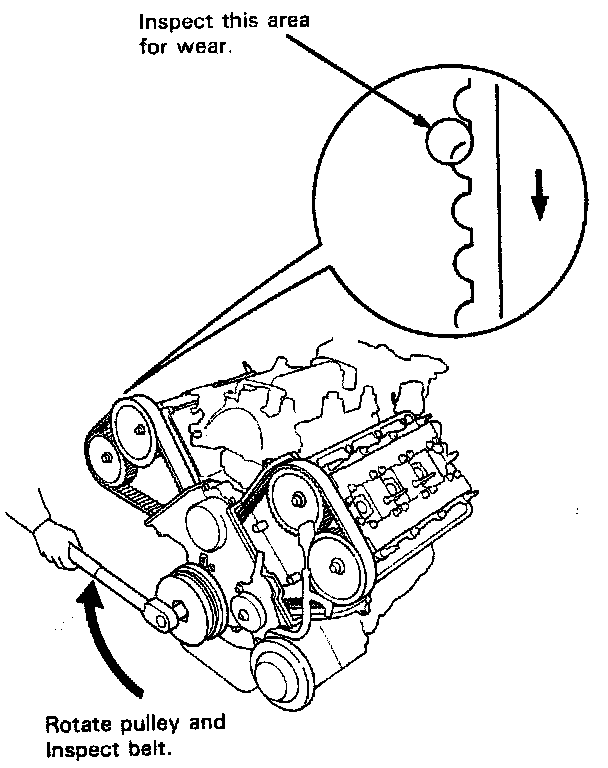

Timing Belt: Testing and Inspection
Inspection
1. Remove the ignition coil covers and harness clamps.
2. Disconnect the connectors, then remove the ignition coils.
3. Remove the cylinder head covers.

4. Inspect the timing belt for cracks and coolant or oil soaking.
NOTE:
- Replace the belt if coolant or oil soaked.
- Remove any oil or solvent that gets on the belt.